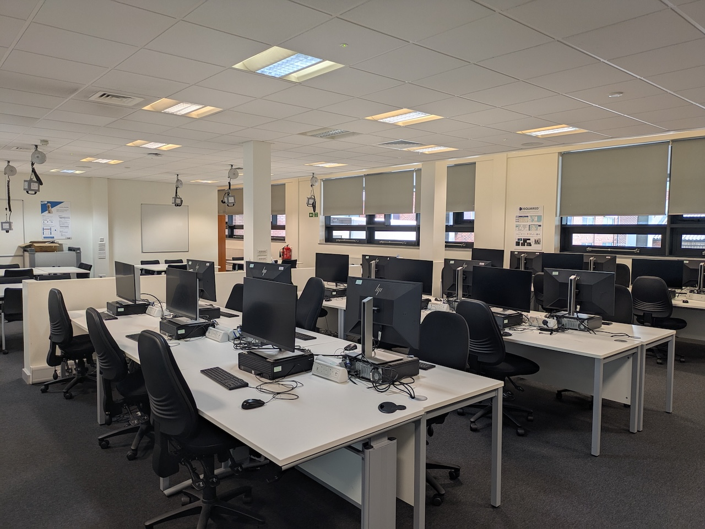

Empowering students through excellence in Design, Computing and
Networking
Discover modern facilities, supportive teaching and courses designed to prepare you for real-world
careers
Cantor College was established in 1989 to specialize in Computing and Design. At Cantor College, we want to give students the education they need to achieve their career aims, leaving them equipped with the knowledge, skills and experience to succeed. Cantor College gives you the opportunities that can give you the edge when you enter the world of work, through our teaching and our links to some of the world's leading researchers and employers. Our students have gone on to successful careers in a wide range of industries across the globe. Whatever your ambitions, our learning and support can help to get the most out of your time with Cantor College, both as a student and in your future career.
The College is located in the attractive and pleasantly refurbished Building. The building houses computing laboratories, and lecture/tutorial rooms. It has its own catering facilities and student work areas. There is also a car park to the back of the building. Our building has space of 9500m², houses over 240 staff and provides teaching space for more than 1600 students.
Get to know about more facilities
The College offers a range of courses to suit applicants with varying backgrounds and educational abilities. At undergraduate level, there are single BSc Honours Degree courses in Computing, Computer Networks, Software Engineering and Cyber Security with Forensics amongst others. The College teaches undergraduate and postgraduate courses in a wide range of specialisms, including computer science, software development, information systems, networking and software engineering. It is at the heart of a passionate computing community, including student societies devoted to games development, digital forensics and programming. The courses are British Computer Society accredited and are highly relevant to modern industry. They are designed to prepare students for professional occupations in Computing and related fields. Many graduates continue their studies to pursue a higher degree such as an MSc. or PhD.
The College is an internationally connected creative community of diverse disciplines housed under one roof. We shape our students' futures, preparing them to shape the world through applied knowledge and creativity. The College's art and design courses don't just train you, they promote alternative ways of thinking, making and communicating; they provide you with space, tools and inspiration to develop your creative practice and a clear career path. You'll get expert teaching from active practitioners and researchers who will encourage you to adopt innovative and resourceful approaches that both perceive and create opportunities for better lives. You’ll develop your creative practice whilst interacting with your peers in well-equipped studios, making and digital workshops. At the same time, you'll learn professional skills by working on applied briefs facilitated through our links with commercial clients, cultural institutions, businesses and organisations.